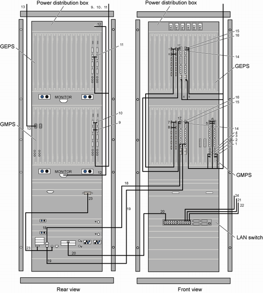

The signal cables in the GBCR consist of the active/standby 75-ohm coaxial cable, active/standby 120-ohm twisted pair cable, optical cable, straight-through cable,inter-GTNU cable, BITS clock cable, Y-shaped clock cable, and PDB monitoring signal cable.
- Figure 1 shows the GBCR configured with the IBM X3650T GBAM.
- Figure 2 shows the GBCR configured with the C5210/HP CC3310 GBAM.

- Figure 1 and Figure 2 show the connections of signal cables between a GMPS and a GEPS. If there are more than one GEPS, you need to connect each GEPS to the GMPS directly. The connection method is the same as the method of connecting the first GEPS to the GMPS.
- The types of interface boards, installation positions of cables, and number of cables shown in Figure 1 and Figure 2 are examples. The actual types of interface boards, installation positions of cables, and number of cables depend on the site plan.
Table 1 describes the connections of the signal cables in the GBCR.
SN |
Description |
Connector Type/Installation Position 1 |
Connector Type/Installation Position 2 |
Remarks |
|---|---|---|---|---|
1 |
75-ohm coaxial clock cable (or 120-ohm clock conversion cable) connecting the GGCU to the BITS clock port |
SMB male connector/CLKIN1 port on the GGCU that is installed in slot 13 of the GMPS |
Connector attached to the BITS clock/BITS clock port |
Figure 1 shows the clock cables that are connected to the CLKIN1 and CLKIN0 ports. Generally, only one port is used to connect to the BITS clock. |
2 |
75-ohm coaxial clock cable (or 120-ohm clock conversion cable) connecting the GGCU to the BITS clock port |
SMB male connector/CLKIN0 port on the GGCU that is installed in slot 13 of the GMPS |
Connector attached to the BITS clock/BITS clock port |
|
3 |
75-ohm coaxial clock cable (or 120-ohm clock conversion cable) connecting the GGCU to the BITS clock port |
SMB male connector/CLKIN1 port on the GGCU that is installed in slot 12 of the GMPS |
Connector attached to the BITS clock/BITS clock port |
|
4 |
75-ohm coaxial clock cable (or 120-ohm clock conversion cable) connecting the GGCU to the BITS clock port |
SMB male connector/CLKIN0 port on the GGCU that is installed in slot 12 of the GMPS |
Connector attached to the BITS clock/BITS clock port |
|
5 |
Y-shaped clock cable connecting the GGCU to the GSCU |
RJ45/CLKOUT port on the GGCU that is installed in slot 12 or 13 of the GMPS |
RJ45/CLKIN port on the GSCU that is installed in slot 6 of the GEPS |
- |
6 |
Y-shaped clock cable connecting the GGCU to the GSCU |
RJ45/CLKOUT port on the GGCU that is installed in slot 12 or 13 of the GMPS |
RJ45/CLKIN port on the GSCU that is installed in slot 7 of the GEPS |
|
7 |
Inter-GTNU cable |
DB14/TDM port on the GTNU that is installed in slot 4 or 5 of the GMPS |
DB14/TDM port on the GTNU that is installed in slot 4 or 5 of the GEPS |
- |
8 |
Inter-GTNU cable |
DB14/TDM port on the GTNU that is installed in slot 4 or 5 of the GMPS |
DB14/TDM port on the GTNU that is installed in slot 4 or 5 of the GEPS |
|
9 |
E1/T1 cable connecting the EIUa/PEUa to the DDF or other NEs |
DB44/E1/T1 port on the EIUa/PEUa that is installed in slot 14 of the GEPS |
DDF or other NEs |
- |
10 |
E1/T1 cable connecting the EIUa/PEUa to the DDF or other NEs |
DB44/E1/T1 port on the EIUa/PEUa that is installed in slot 15 of the GEPS |
DDF or other NEs |
|
11 |
E1/T1 cable connecting the EIUa/PEUa to the DDF or other NEs |
DB44/E1/T1 port on the EIUa/PEUa that is installed in slot 14 or 15 of the GEPS |
DDF or other NEs |
- |
12 |
PDB monitoring signal cable |
DB15/port connecting the PDB to a service subrack |
DB15/MONITOR port on the lowest subrack |
- |
13 |
Optical cable |
LC optical port/slot 27 of the GEPS |
OIUa in the GTCS, or ODF, or other NEs |
- |
14 |
Inter-GSCU Ethernet cable |
RJ45/10/100/1000BASE-T port on the GSCU that is installed in slot 7 of the GMPS |
RJ45/10/100/1000BASE-T port on the GSCU that is installed in slot 6 of the GEPS |
- |
15 |
Inter-GSCU Ethernet cable |
RJ45/10/100/1000BASE-T port on the GSCU that is installed in slot 7 of the GMPS |
RJ45/10/100/1000BASE-T port on the GSCU that is installed in slot 7 of the GEPS |
|
16 |
Inter-GSCU Ethernet cable |
RJ45/10/100/1000BASE-T port on the GSCU that is installed in slot 6 of the GMPS |
RJ45/10/100/1000BASE-T port on the GSCU that is installed in slot 7 of the GEPS |
|
17 |
Inter-GSCU Ethernet cable |
RJ45/10/100/1000BASE-T port on the GSCU that is installed in slot 6 of the GMPS |
RJ45/10/100/1000BASE-T port on the GSCU that is installed in slot 6 of the GEPS |
|
18 |
Ethernet cable between the GSCU and the GBAM |
RJ45/GBAM |
RJ45/10/100/1000BASE-T10 port on the GSCU that is installed in slot 6 of the GMPS |
- |
19 |
Ethernet cable between the GSCU and the GBAM |
RJ45/GBAM |
RJ45/10/100/1000BASE-T10 port on the GSCU that is installed in slot 7 of the GEPS |
|
20 |
Ethernet cable between the LAN switch and the GBAM |
RJ45/Ethernet port on the GBAM |
RJ45/Ethernet port on the LAN switch |
The GBAM is connected to port 2 on the LAN switch. |
21 |
Ethernet cable between the LAN switch and the LMT computer |
RJ45/Ethernet port on the LAN switch |
RJ45/LMT computer |
The LMT computer is connected to port 22 on the LAN switch. |
22 |
Ethernet cable between the LAN switch and the M2000 (LAN) |
RJ45/Ethernet port on the LAN switch |
RJ45/Ethernet port on the M2000 (LAN) |
The M2000 (LAN) is connected to port 24 on the LAN switch. |
23 |
Ethernet cable between the GBAM and the KVM |
DB25 male connector/KVM signal input port |
DB15 male connector/GBAM monitor port (PS2 male connector)/Y-shaped KVM mouse port (PS2 male connector)/Y-shaped KVM key port |
- |
24 |
Ethernet cable between the LAN switch and the CBC |
RJ45/Ethernet port on the LAN switch |
RJ45/Ethernet port on the M2000 (LAN) |
The CBC is connected to port 20 on the LAN switch. |